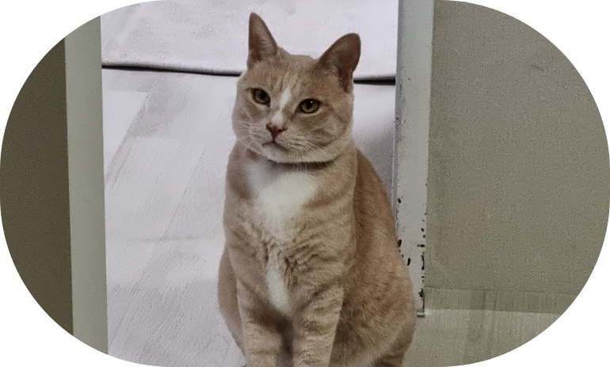

play_arrow
stop
TRAVEL
PROJECT
RECORD
PLAN

ANIMAL
목표를 향해 나아가다
학창 시절, 7년간 해온 운동을 접고 새 진로를 찾기 위해 19살이라는
어린 나이에 취업 전선에 뛰어들었습니다.
4년간 일을 하는 중 우연찮게 접한 디자인에 관심이 생겼고 고향으로 내려가
web disign, web publisher 공부하여 웹디자이너로서 취업을 성공하였습니다.
플랫폼 회사에 취업하여 여러 IT 업무를 접하게 되고,
Back-End, Front-End 개발자분들과 협업을 하면서 본신의 역량과 부족한 부분을 채워갈 수 있었습니다.
매사에 밝고 적극적인 성격은 팀장 및 팀원분들이 편해하셨고
많은 프로젝트를 도맡아 해볼 수 있는 경험이 되었으며, 그 결과 3개월이 소요되는
플랫폼 사이트 제작 프로젝트에 메인 디자이너로 참여하여
오픈 당일 억대 매출을 달성하는 쾌거를 이뤘습니다.
전 회사에서 주 업무로 disign, publishing 작업을 하면서 개발자분들과의 협업을 통해
웹 개발에 관심을 가지게 되었고 퇴근 후 Front-End 개발 공부도 겸하게 되었습니다.
공부 및 개발노트를 블로그에 기록을 하고 있으며,
내일은 더 발전할 수 있는 내가 되기 위해 노력하고 있습니다.
아직 부족하지만 스스로에 만족하지 않고 열심히 나아가겠습니다.